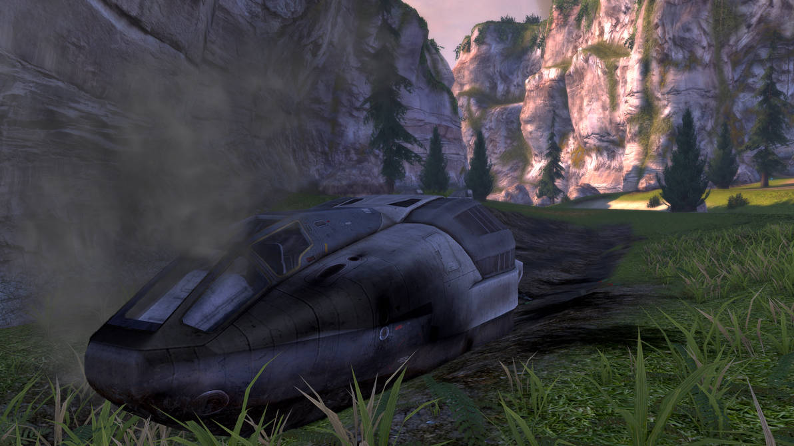
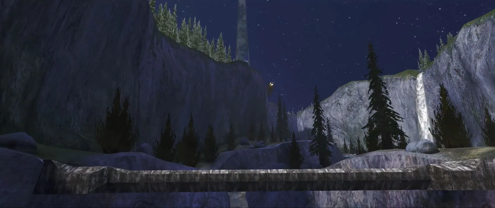

Mergi la inceput
Mergi inapoi
HALO
Pe Halo, Master Chief descoperă că structura nu este doar un artefact enigmatic,
ci o lume complet funcțională cu ecosisteme diverse. Cortana află că Covenant
consideră Halo o relicvă sacră creată de Forerunners, o rasă avansată dispărută.
În timp ce explorează, Master Chief salvează supraviețuitori din Pillar of Autumn și
încearcă să înțeleagă scopul inelului.


Cutscene-ul cand aterizeaza pe HALO:
Urmatorul nivel.